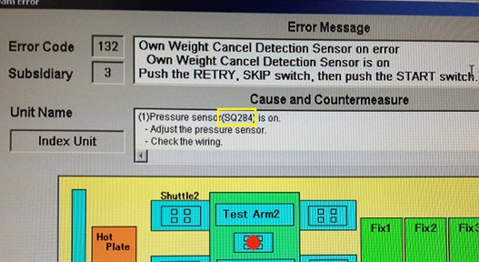
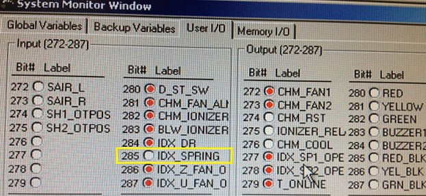
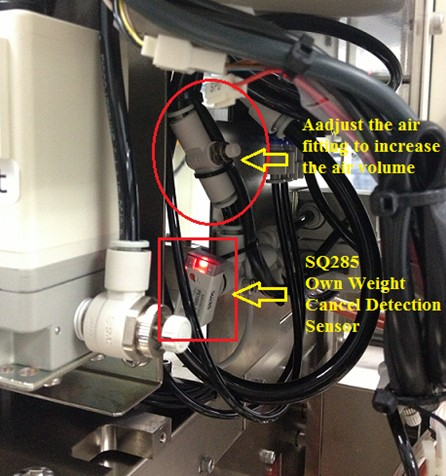
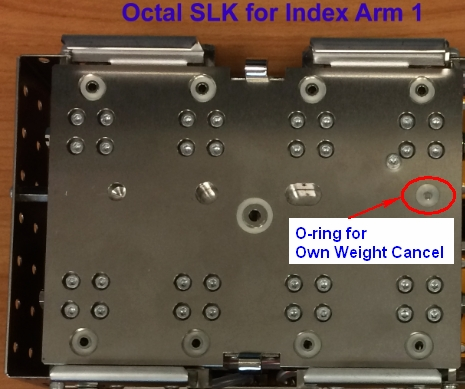

Service History
Subject: Own Weight Cancel Detection sensor on Error
Handler Model: NS-8080 (S/N: 182242, H46-NS88)
Controller: RC520 (S/N: 03-30163) HMI P12.57-SAS / SPEl CT 3.12-h
Date: 15 Mar 2013
Symptom
Encountered an error during buy off of the new NS8080 at ASE.
The error happens during initial start when the start button is pressed.
Error message is Own Weight Cancel Detection sensor on Error.
Found wrong IO feed back for Own Weight Cancel Detection error message, it is supposed to be SQ285 instead of SQ284.

Found the SQ285 Own Weight Cancel detection sensor OFF when initial start.

Error recovered after adjust the air fitting to increase the air pressure to turn On the SQ285 Own Weight Cancel Detection sensor.

I would like to know if it is the correct method to just adjust the air fitting to increase the air volume.
Can you please advise how much air should we increase if we do this method?
Is there any other method to adjust the sensor if the above method doesn't work?
Kindly highlight to Epson to change the wrong IO message SQ285 instead of SQ284.
(Actually SQ284 (SQ284A + SQ284B) is for Index Door sensor switch)
Action
1) Pressure sensor SQ285 is ON when normal SLK(eg standard NS_7000 type) is used.
SQ285 is Off when special NS-8000 spring loaded compliance cylinder(golden brown) SLK is used.
2) Check wiring of pressure sensor SQ285
3) Air valves (YV277 for Index Arm 1 Identify Air valve, YV278 for Index Arm 2 Identify Air valve) are functioning (use SPEL Output Bit)
Cause
Remarks
If W03134 Socket layout differs from the HMI setting, check:
1) Sensor SQ285 is working
2) Air supply control by air fitting valve
3) Tubing is not broken, bend or pressed too much by cable tie
4) Air valves (YV277, YV278) are functioning (use SPEL Output Bit)
5) Correct type of spring loaded compliance cylinder(golden brown) SLK is used
6) O-ring on SLK for detecting spring loaded compliance cylinder(golden brown) is not missing.
